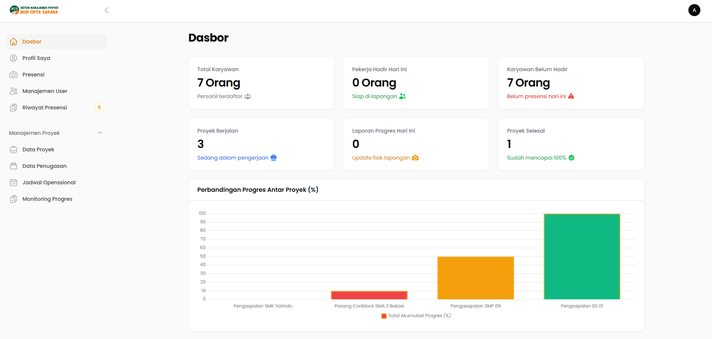
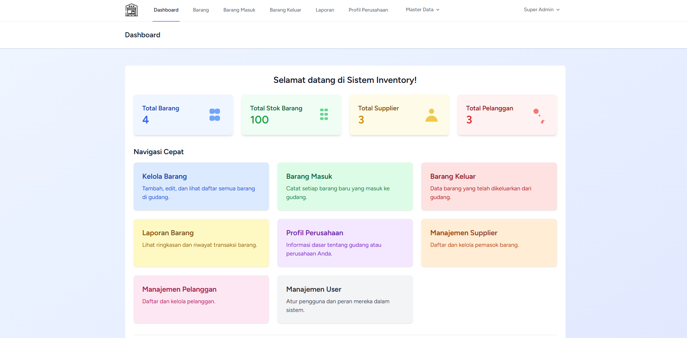

Passionate about Software Engineering, and Network Engineering.
Saya merupakan fresh graduate (S1) Program Studi Teknologi Informasi Universitas Bina Sarana Informatika yang komunikatif, bertanggung jawab, pekerja keras, dan memiliki semangat tinggi untuk berkembang di dunia teknologi. Memiliki pemahaman dalam pemrograman dan infrastruktur jaringan, serta siap mengembangkan kemampuan dan memberikan kontribusi positif di lingkungan kerja.
PT. Niramas Utama (Inaco) | Bekasi, Indonesia
Agustus 2022 - November 2022SMKN 3 Kota Bekasi | Bekasi, Indonesia
Juni 2022 - Agustus 2022Dinas Sosial Kota Bekasi (PKL) | Bekasi, Indonesia
Mei 2021 - Juli 2021

Badan Nasional Sertifikasi Profesi
Completed: September 2025 Lihat SertifikatDigital Talent Scholarship
Completed: Desember 2024 Lihat SertifikatTertarik untuk berkolaborasi? Jangan ragu untuk menghubungi saya melalui: